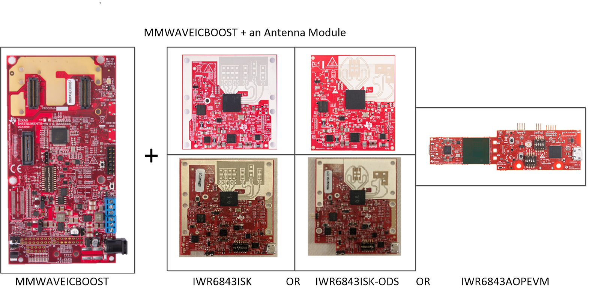
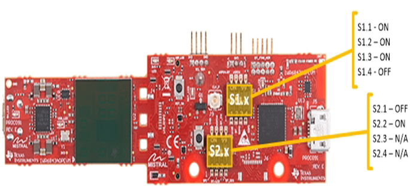
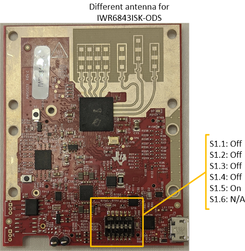
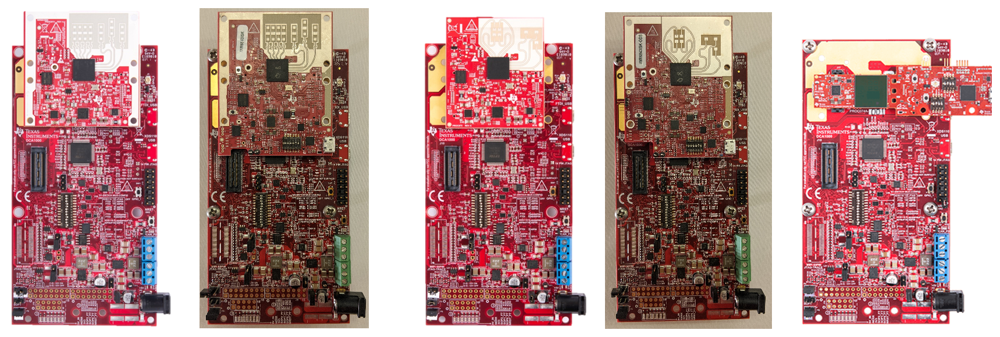
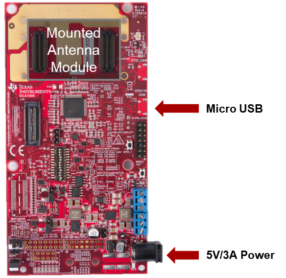
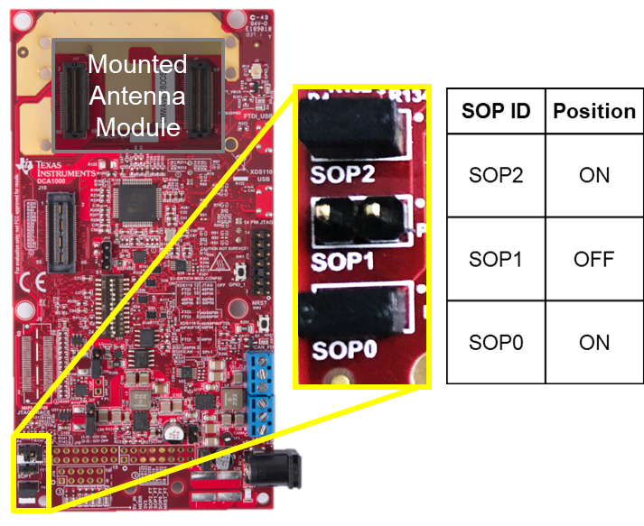

Hardware Setup for Flashing in MMWAVEICBOOST Mode
===========
This guide is intended for users with an **MMWAVEICBOOST carrier board** and **antenna module board**. The guide will walk through setting up the boards into **Flashing Mode**.

# 0. Requirements
### Required and Supported mmWave Evaluation Modules (EVM)
Quantity | Item
------------------|-----------------
1 | [MMWAVEICBOOST Carrier Board](http://www.ti.com/tool/MMWAVEICBOOST)
1 | Antenna Module Board: [IWR6843ISK](http://www.ti.com/tool/IWR6843ISK), [IWR6843ISK-ODS](http://www.ti.com/tool/IWR6843ISK-ODS), or [IWR6843AOPEVM](http://www.ti.com/tool/IWR6843AOPEVM)
### Additional Requirements
Quantity | Item | Details
---------|--------------------------|-----------------
1 | Micro USB Cable | Provided with the [Industrial Radar Carrier Board](http://www.ti.com/tool/MMWAVEICBOOST)
1 | Power Supply | 5V, 3A with 2.1-mm barrel jack (center positive). The power supply can be wall adapter style or a battery pack with a USB to barrel jack cable.
# 1. Configure Antenna Module
This step applies if using the IWR6843AOPEVM, IWR6843ISK Rev.C, or IWR6843ISK-ODS Rev.B antenna module.
To use the AOPEVM as an antenna module in conjunction with the MMWAVEICBOOST carrier card the switches need to be set as shown to route signals from the carrier card through the 60Pin header.
### Front of AOPEVM

### Back of AOPEVM
<img src="images/carrier_and_antenna_module/aop_back_carrier_mode.png" width="600"/>
To use the IWR6843ISK Rev. C or IWR6843ODS Rev. B as an antenna module in conjunction with the ICBOOST carrier card the switches need to be set as shown to route signals from the carrier card through the 60Pin header.
### Front of IWR6843ISK/ODS EVM

# 2. Mount Antenna Module
Mount the selected antenna module on the 60Pin HD connectors.
* If using the older revision of the ISK or ODS module, both 60Pin connectors will be used.
* If using IWR6843ISK Rev. C or IWR6843ODS Rev. B, only the right connector closer to the micro-usb connectors will be connected.
* If using the AOPEVM module, only the right connector closer to the micro-usb connectors will be connected.
<img src="images/carrier_and_antenna_module/mount_antenna_modules_on_carrier_2.png" width="500"/>
The mounted modules should appear as shown below.

# 3. Set MUX Controls on MMWAVEICBOOST for Standalone Operation
Set the S1 switch combination as shown below. This puts the MMWAVEICBOOST in standalone operation as opposed to in development mode for use with a DCA1000.
<img src="images/carrier_and_antenna_module/carrier_mux_control_standalone.png" width="500"/>
# 4. Connect micro-USB and Power
* Connect the micro-USB to the carrier board at the connector shown and to the PC. Note that the micro-USB is connected to the lower XDS110 USB (and not the FTDI USB).
* Connect the 5V/3A power supply to the power source and then to the carrier board. LEDs on the carrier board should turn on.

# 5. Set SOP Mode for Flashing Mode
Enable flashing mode by setting the SOP2:0 to 101 as shown below.

# 6. Toggle NRST switch
To ensure that the correct SOP mode is latched once power has been applied, power cycle and then press and release the RST switch identified below. The yellow DS1 LED below the switch should toggle OFF and ON when the switch is depressed then released.
<img src="images/carrier_and_antenna_module/carrier_assert_nrst.png" width="400"/>
[[y! Toggling NRST
After any SOP mode jumpers are changed, NRST should be always be toggled to ensure a reliable boot-up state.
]]
Next Step
===========
Now that the hardware has been setup for **Flashing Mode**, go to the software guide for [Using UniFlash with mmWave](../software_setup/using_uniflash_with_mmwave.html).
Need More Help?
===========
* Consult the [mmWaveICBoost and Antenna Module User's Guide](http://www.ti.com/lit/pdf/swru546)
* Search for your issue or post a new question on the [mmWave E2E forum](https://e2e.ti.com/support/sensor/mmwave_sensors/f/1023)